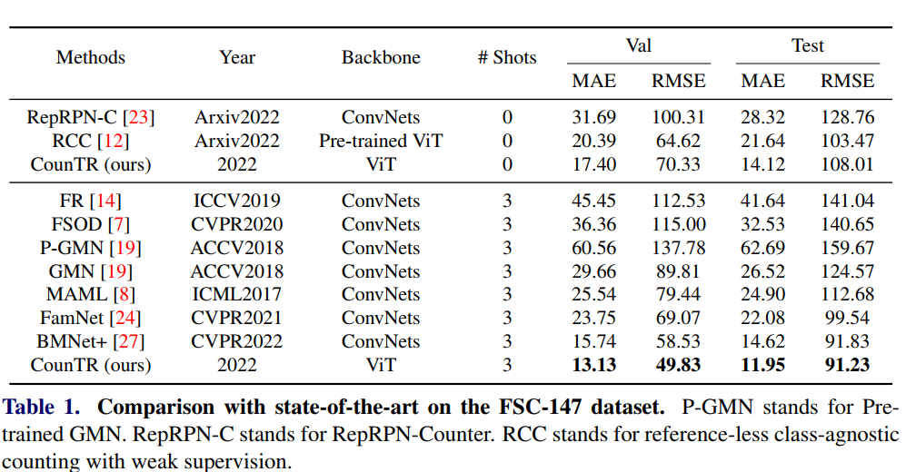
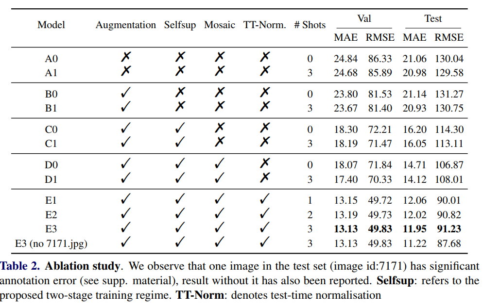
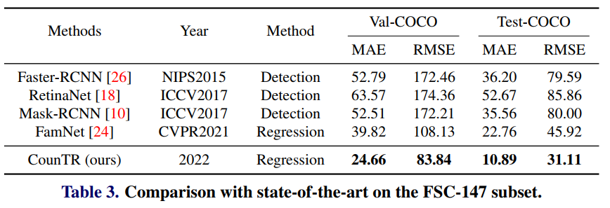
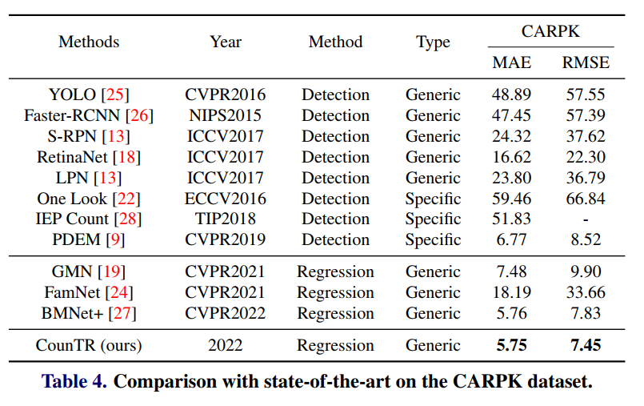

| In this paper, we consider the problem of generalised visual object counting, with the goal of developing a computational model for counting the number of objects from arbitrary semantic categories, using arbitrary number of ``exemplars'', i.e. ~zero-shot or few-shot counting. To this end, we make the following four contributions: (1) We introduce a novel transformer-based architecture for generalised visual object counting, termed as Counting Transformer (CounTR), which explicitly capture the similarity between image patches or with given ``exemplars'' with the attention mechanism;(2) We adopt a two-stage training regime, that first pre-trains the model with self-supervised learning, and followed by supervised fine-tuning;(3) We propose a simple, scalable pipeline for synthesizing training images with a large number of instances or that from different semantic categories, explicitly forcing the model to make use of the given ``exemplars'';(4) We conduct thorough ablation studies on the large-scale counting benchmark, e.g. FSC-147, and demonstrate state-of-the-art performance on both zero and few-shot settings. |
Results
Any-shot Class-agnostic Counting Result on FSC-147 Dataset

Ablation Study Result

Any-shot Class-agnostic Counting Result on Val-COCO and Test-COCO Dataset

Few-shot Class-specific Counting Result on CARPK Dataset

Qualitative Results

Acknowledgements
We thank Xiaoman Zhang and Chaoyi Wu for proof-reading.
Webpage template modified from Richard Zhang.